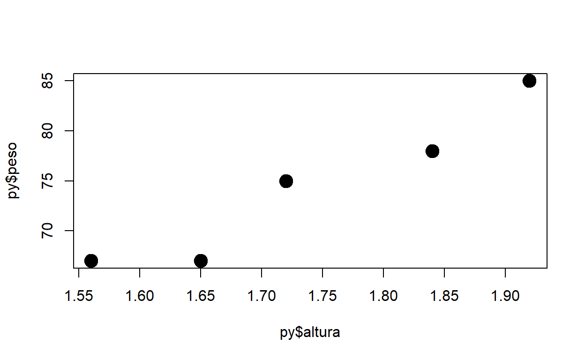

Table of Contents
Requisitos previos
- Tener instalado Python
- Recomendable instalar Anaconda Navigator
- Instalar la biblioteca
reticulatedesde R.
Biblioteca Reticulate

library(reticulate)Importando módulos de python
Importando numpy
np <- import("numpy")
np$argmin(c(2, 1, 3))
[1] 1- En esta salida se muestra cómo aplicar la función
arcgminde python sobre un vector de R. Devuelve la posición (índice) donde se encuentra el valor mínimo del vector dado. - Es posible acceder a todas las funciones de
numpydesde el objetonpcon el símbolo dólar$.
Importando os
os <- import("os")
os$getcwd()
[1] "D:\\DocumentosEdimer\\MisDocumentos\\Github\\web-edimer.github.io\\_posts\\py_r_1"Usando python
import numpy as np
np.argmax(np.array([1, 4, 10]))
2Función de python llamada por R
- Declarando la función en python:
def add(x, y):
return x + y
add(2, 2)
4- Llamando la función
add()desde R
py$add(2, 2)
[1] 4Usando numpy
np.arange(0, 5)
array([0, 1, 2, 3, 4])
np.arange(0, 10, 2)
array([0, 2, 4, 6, 8])
np.ones((2, 2))
array([[1., 1.],
[1., 1.]])- Simulando 100 valores aleatorios de la distribución normal, con media 2 y varianza 3:.
np.random.seed(1)
valores = np.random.normal(loc = 2, scale = 3, size = 100)
valores
array([ 6.87303609, 0.16473076, 0.41548474, -1.21890587, 4.59622289,
-4.90461609, 7.23443529, -0.2836207 , 2.95711729, 1.25188887,
6.38632381, -4.18042213, 1.03274839, 0.84783694, 5.40130833,
-1.2996738 , 1.48271538, -0.63357525, 2.12664124, 3.74844564,
-1.30185753, 5.43417113, 4.70477216, 3.50748302, 4.70256785,
-0.05118358, 1.63132932, -0.8073083 , 1.19633576, 3.5910664 ,
-0.07498226, 0.80973942, -0.0615181 , -0.53561692, -0.01373839,
1.9620062 , -1.35193105, 2.70324709, 6.97940653, 4.22613248,
1.42449334, -0.66288689, -0.24147488, 7.0773638 , 2.15242326,
0.08901306, 2.57274645, 8.30076541, 2.36047686, 3.85160933,
2.90051096, 0.94325046, -1.42755459, 0.95197183, 1.3733173 ,
3.75986957, 4.51695024, 4.79330624, 2.85676198, 4.65542349,
-0.26319382, 5.75860447, 3.53878946, 1.10572149, 3.46555444,
1.77328486, 5.39488816, 6.55945045, 8.55672622, -2.18948901,
-2.33234142, 0.48660241, 2.48011121, 4.62850676, 2.94690484,
-4.06660365, 1.08138796, 4.48392393, 2.69028421, 4.28603354,
1.33301557, 1.39772579, 2.55968417, 3.23015494, 2.59489916,
2.35702594, -0.01198686, 3.13269136, 2.36546381, 5.38845172,
5.59675364, 2.55546925, 0.87414515, 0.08380878, 3.27048306,
2.23202021, 0.96843897, 2.13079057, 0.13999747, 4.0940961 ])Gráfico con matplotlib
import matplotlib
import matplotlib.pyplot as plt
fig, g1 = plt.subplots()
g1 = g1.hist(valores, bins = 30)
g1 = plt.grid()
g1
Ayudas
os <- import("os")
py_help(os$chdir)En el editor de texto aparecerá el siguiente texto:
Objetos
Tupla desde R
- Creando una tupla y obteniendo su clase:
tupla1 <- tuple(c(1, 2, 3, "A"))
tupla1
(['1', '2', '3', 'A'],)
# Clase en python
class(tupla1)
[1] "python.builtin.tuple" "python.builtin.object"- Coercionar el objeto
tupla1de clasetupleen python directamente a R:
tupla1_r <- py_to_r(tupla1)
tupla1_r
[[1]]
[1] "1" "2" "3" "A"
# Clase en R
class(tupla1_r)
[1] "list"Diccionario desde R
# Objeto
dict1 <- dict(x = "Hola", y = 3.5, z = 1L)
dict1
{'x': 'Hola', 'y': 3.5, 'z': 1}
# Clase
class(dict1)
[1] "python.builtin.dict" "python.builtin.object"
# Nombres
names(dict1)
[1] "x" "y" "z"
# Atributos
attributes(dict1)
$class
[1] "python.builtin.dict" "python.builtin.object"
# Coerción a objeto R
dict1_r <- py_to_r(dict1)
dict1_r
$x
[1] "Hola"
$y
[1] 3.5
$z
[1] 1
# Clase en R
class(dict1_r)
[1] "list"Tupla en python
- Creando tupla en python:
# Creando tupla
altura = (1.65, 1.72, 1.56, 1.84, 1.92)
altura
(1.65, 1.72, 1.56, 1.84, 1.92)
# Otra tupla
peso = (67, 75, 67, 78, 85)
peso
(67, 75, 67, 78, 85)
# Tipo (clase) de objetos
type(altura)
<class 'tuple'>
type(peso)
<class 'tuple'>- Llamando la tupla desde R:
class(py$altura)
[1] "list"
plot(x = py$altura, y = py$peso, pch = 19, cex = 2)
Tipos de objetos en ambos lenguajes
Índices
- Desde python:
altura
(1.65, 1.72, 1.56, 1.84, 1.92)
altura[0]
1.65- En R:
py$altura[1]
[[1]]
[1] 1.65Instalando un módulo de python desde R
Instalando pandas
py_install("pandas")Importando pandas y leyendo archivo .csv
import pandas as pd
iris_py = pd.read_csv("Iris.csv")
iris_py
Sepal.Length Sepal.Width Petal.Length Petal.Width Species
0 5.1 3.5 1.4 0.2 setosa
1 4.9 3.0 1.4 0.2 setosa
2 4.7 3.2 1.3 0.2 setosa
3 4.6 3.1 1.5 0.2 setosa
4 5.0 3.6 1.4 0.2 setosa
.. ... ... ... ... ...
145 6.7 3.0 5.2 2.3 virginica
146 6.3 2.5 5.0 1.9 virginica
147 6.5 3.0 5.2 2.0 virginica
148 6.2 3.4 5.4 2.3 virginica
149 5.9 3.0 5.1 1.8 virginica
[150 rows x 5 columns]
type(iris_py)
<class 'pandas.core.frame.DataFrame'>- Estadísticos descriptivos:
iris_py.describe()
Sepal.Length Sepal.Width Petal.Length Petal.Width
count 150.000000 150.000000 150.000000 150.000000
mean 5.843333 3.057333 3.758000 1.199333
std 0.828066 0.435866 1.765298 0.762238
min 4.300000 2.000000 1.000000 0.100000
25% 5.100000 2.800000 1.600000 0.300000
50% 5.800000 3.000000 4.350000 1.300000
75% 6.400000 3.300000 5.100000 1.800000
max 7.900000 4.400000 6.900000 2.500000- Seleccionando variables por nombre:
iris_py[["Sepal.Length", "Sepal.Width"]]
Sepal.Length Sepal.Width
0 5.1 3.5
1 4.9 3.0
2 4.7 3.2
3 4.6 3.1
4 5.0 3.6
.. ... ...
145 6.7 3.0
146 6.3 2.5
147 6.5 3.0
148 6.2 3.4
149 5.9 3.0
[150 rows x 2 columns]- Filtrando datos:
filtro = iris_py["Sepal.Width"] <= 2.2
iris_py[filtro]
Sepal.Length Sepal.Width Petal.Length Petal.Width Species
60 5.0 2.0 3.5 1.0 versicolor
62 6.0 2.2 4.0 1.0 versicolor
68 6.2 2.2 4.5 1.5 versicolor
119 6.0 2.2 5.0 1.5 virginicaDataframecomoarray:
iris_py.values
array([[5.1, 3.5, 1.4, 0.2, 'setosa'],
[4.9, 3.0, 1.4, 0.2, 'setosa'],
[4.7, 3.2, 1.3, 0.2, 'setosa'],
[4.6, 3.1, 1.5, 0.2, 'setosa'],
[5.0, 3.6, 1.4, 0.2, 'setosa'],
[5.4, 3.9, 1.7, 0.4, 'setosa'],
[4.6, 3.4, 1.4, 0.3, 'setosa'],
[5.0, 3.4, 1.5, 0.2, 'setosa'],
[4.4, 2.9, 1.4, 0.2, 'setosa'],
[4.9, 3.1, 1.5, 0.1, 'setosa'],
[5.4, 3.7, 1.5, 0.2, 'setosa'],
[4.8, 3.4, 1.6, 0.2, 'setosa'],
[4.8, 3.0, 1.4, 0.1, 'setosa'],
[4.3, 3.0, 1.1, 0.1, 'setosa'],
[5.8, 4.0, 1.2, 0.2, 'setosa'],
[5.7, 4.4, 1.5, 0.4, 'setosa'],
[5.4, 3.9, 1.3, 0.4, 'setosa'],
[5.1, 3.5, 1.4, 0.3, 'setosa'],
[5.7, 3.8, 1.7, 0.3, 'setosa'],
[5.1, 3.8, 1.5, 0.3, 'setosa'],
[5.4, 3.4, 1.7, 0.2, 'setosa'],
[5.1, 3.7, 1.5, 0.4, 'setosa'],
[4.6, 3.6, 1.0, 0.2, 'setosa'],
[5.1, 3.3, 1.7, 0.5, 'setosa'],
[4.8, 3.4, 1.9, 0.2, 'setosa'],
[5.0, 3.0, 1.6, 0.2, 'setosa'],
[5.0, 3.4, 1.6, 0.4, 'setosa'],
[5.2, 3.5, 1.5, 0.2, 'setosa'],
[5.2, 3.4, 1.4, 0.2, 'setosa'],
[4.7, 3.2, 1.6, 0.2, 'setosa'],
[4.8, 3.1, 1.6, 0.2, 'setosa'],
[5.4, 3.4, 1.5, 0.4, 'setosa'],
[5.2, 4.1, 1.5, 0.1, 'setosa'],
[5.5, 4.2, 1.4, 0.2, 'setosa'],
[4.9, 3.1, 1.5, 0.2, 'setosa'],
[5.0, 3.2, 1.2, 0.2, 'setosa'],
[5.5, 3.5, 1.3, 0.2, 'setosa'],
[4.9, 3.6, 1.4, 0.1, 'setosa'],
[4.4, 3.0, 1.3, 0.2, 'setosa'],
[5.1, 3.4, 1.5, 0.2, 'setosa'],
[5.0, 3.5, 1.3, 0.3, 'setosa'],
[4.5, 2.3, 1.3, 0.3, 'setosa'],
[4.4, 3.2, 1.3, 0.2, 'setosa'],
[5.0, 3.5, 1.6, 0.6, 'setosa'],
[5.1, 3.8, 1.9, 0.4, 'setosa'],
[4.8, 3.0, 1.4, 0.3, 'setosa'],
[5.1, 3.8, 1.6, 0.2, 'setosa'],
[4.6, 3.2, 1.4, 0.2, 'setosa'],
[5.3, 3.7, 1.5, 0.2, 'setosa'],
[5.0, 3.3, 1.4, 0.2, 'setosa'],
[7.0, 3.2, 4.7, 1.4, 'versicolor'],
[6.4, 3.2, 4.5, 1.5, 'versicolor'],
[6.9, 3.1, 4.9, 1.5, 'versicolor'],
[5.5, 2.3, 4.0, 1.3, 'versicolor'],
[6.5, 2.8, 4.6, 1.5, 'versicolor'],
[5.7, 2.8, 4.5, 1.3, 'versicolor'],
[6.3, 3.3, 4.7, 1.6, 'versicolor'],
[4.9, 2.4, 3.3, 1.0, 'versicolor'],
[6.6, 2.9, 4.6, 1.3, 'versicolor'],
[5.2, 2.7, 3.9, 1.4, 'versicolor'],
[5.0, 2.0, 3.5, 1.0, 'versicolor'],
[5.9, 3.0, 4.2, 1.5, 'versicolor'],
[6.0, 2.2, 4.0, 1.0, 'versicolor'],
[6.1, 2.9, 4.7, 1.4, 'versicolor'],
[5.6, 2.9, 3.6, 1.3, 'versicolor'],
[6.7, 3.1, 4.4, 1.4, 'versicolor'],
[5.6, 3.0, 4.5, 1.5, 'versicolor'],
[5.8, 2.7, 4.1, 1.0, 'versicolor'],
[6.2, 2.2, 4.5, 1.5, 'versicolor'],
[5.6, 2.5, 3.9, 1.1, 'versicolor'],
[5.9, 3.2, 4.8, 1.8, 'versicolor'],
[6.1, 2.8, 4.0, 1.3, 'versicolor'],
[6.3, 2.5, 4.9, 1.5, 'versicolor'],
[6.1, 2.8, 4.7, 1.2, 'versicolor'],
[6.4, 2.9, 4.3, 1.3, 'versicolor'],
[6.6, 3.0, 4.4, 1.4, 'versicolor'],
[6.8, 2.8, 4.8, 1.4, 'versicolor'],
[6.7, 3.0, 5.0, 1.7, 'versicolor'],
[6.0, 2.9, 4.5, 1.5, 'versicolor'],
[5.7, 2.6, 3.5, 1.0, 'versicolor'],
[5.5, 2.4, 3.8, 1.1, 'versicolor'],
[5.5, 2.4, 3.7, 1.0, 'versicolor'],
[5.8, 2.7, 3.9, 1.2, 'versicolor'],
[6.0, 2.7, 5.1, 1.6, 'versicolor'],
[5.4, 3.0, 4.5, 1.5, 'versicolor'],
[6.0, 3.4, 4.5, 1.6, 'versicolor'],
[6.7, 3.1, 4.7, 1.5, 'versicolor'],
[6.3, 2.3, 4.4, 1.3, 'versicolor'],
[5.6, 3.0, 4.1, 1.3, 'versicolor'],
[5.5, 2.5, 4.0, 1.3, 'versicolor'],
[5.5, 2.6, 4.4, 1.2, 'versicolor'],
[6.1, 3.0, 4.6, 1.4, 'versicolor'],
[5.8, 2.6, 4.0, 1.2, 'versicolor'],
[5.0, 2.3, 3.3, 1.0, 'versicolor'],
[5.6, 2.7, 4.2, 1.3, 'versicolor'],
[5.7, 3.0, 4.2, 1.2, 'versicolor'],
[5.7, 2.9, 4.2, 1.3, 'versicolor'],
[6.2, 2.9, 4.3, 1.3, 'versicolor'],
[5.1, 2.5, 3.0, 1.1, 'versicolor'],
[5.7, 2.8, 4.1, 1.3, 'versicolor'],
[6.3, 3.3, 6.0, 2.5, 'virginica'],
[5.8, 2.7, 5.1, 1.9, 'virginica'],
[7.1, 3.0, 5.9, 2.1, 'virginica'],
[6.3, 2.9, 5.6, 1.8, 'virginica'],
[6.5, 3.0, 5.8, 2.2, 'virginica'],
[7.6, 3.0, 6.6, 2.1, 'virginica'],
[4.9, 2.5, 4.5, 1.7, 'virginica'],
[7.3, 2.9, 6.3, 1.8, 'virginica'],
[6.7, 2.5, 5.8, 1.8, 'virginica'],
[7.2, 3.6, 6.1, 2.5, 'virginica'],
[6.5, 3.2, 5.1, 2.0, 'virginica'],
[6.4, 2.7, 5.3, 1.9, 'virginica'],
[6.8, 3.0, 5.5, 2.1, 'virginica'],
[5.7, 2.5, 5.0, 2.0, 'virginica'],
[5.8, 2.8, 5.1, 2.4, 'virginica'],
[6.4, 3.2, 5.3, 2.3, 'virginica'],
[6.5, 3.0, 5.5, 1.8, 'virginica'],
[7.7, 3.8, 6.7, 2.2, 'virginica'],
[7.7, 2.6, 6.9, 2.3, 'virginica'],
[6.0, 2.2, 5.0, 1.5, 'virginica'],
[6.9, 3.2, 5.7, 2.3, 'virginica'],
[5.6, 2.8, 4.9, 2.0, 'virginica'],
[7.7, 2.8, 6.7, 2.0, 'virginica'],
[6.3, 2.7, 4.9, 1.8, 'virginica'],
[6.7, 3.3, 5.7, 2.1, 'virginica'],
[7.2, 3.2, 6.0, 1.8, 'virginica'],
[6.2, 2.8, 4.8, 1.8, 'virginica'],
[6.1, 3.0, 4.9, 1.8, 'virginica'],
[6.4, 2.8, 5.6, 2.1, 'virginica'],
[7.2, 3.0, 5.8, 1.6, 'virginica'],
[7.4, 2.8, 6.1, 1.9, 'virginica'],
[7.9, 3.8, 6.4, 2.0, 'virginica'],
[6.4, 2.8, 5.6, 2.2, 'virginica'],
[6.3, 2.8, 5.1, 1.5, 'virginica'],
[6.1, 2.6, 5.6, 1.4, 'virginica'],
[7.7, 3.0, 6.1, 2.3, 'virginica'],
[6.3, 3.4, 5.6, 2.4, 'virginica'],
[6.4, 3.1, 5.5, 1.8, 'virginica'],
[6.0, 3.0, 4.8, 1.8, 'virginica'],
[6.9, 3.1, 5.4, 2.1, 'virginica'],
[6.7, 3.1, 5.6, 2.4, 'virginica'],
[6.9, 3.1, 5.1, 2.3, 'virginica'],
[5.8, 2.7, 5.1, 1.9, 'virginica'],
[6.8, 3.2, 5.9, 2.3, 'virginica'],
[6.7, 3.3, 5.7, 2.5, 'virginica'],
[6.7, 3.0, 5.2, 2.3, 'virginica'],
[6.3, 2.5, 5.0, 1.9, 'virginica'],
[6.5, 3.0, 5.2, 2.0, 'virginica'],
[6.2, 3.4, 5.4, 2.3, 'virginica'],
[5.9, 3.0, 5.1, 1.8, 'virginica']], dtype=object)Importando tensorflow desde python
import tensorflow as tf- Funciones desde
tf:
Visualizando datos con matplotlib
Ejemplo 1
import matplotlib.pyplot as plt
x = np.arange(0, 20)
y = x**2
g1 = plt.plot(x, y, "g--")
g1 = plt.title("X vs Y")
g1 = plt.xlabel("Eje x")
g1 = plt.ylabel("Eje Y")
g1
Ejemplo 2
w = np.arange(0, 50).reshape(5, 10)
w
array([[ 0, 1, 2, 3, 4, 5, 6, 7, 8, 9],
[10, 11, 12, 13, 14, 15, 16, 17, 18, 19],
[20, 21, 22, 23, 24, 25, 26, 27, 28, 29],
[30, 31, 32, 33, 34, 35, 36, 37, 38, 39],
[40, 41, 42, 43, 44, 45, 46, 47, 48, 49]])
g2 = plt.imshow(w)
g2 = plt.colorbar()
plt.show()
Ejemplo 3
- Gráfico desde un
Dataframe:
g3 = iris_py.plot(x = "Sepal.Length", y = "Sepal.Width", kind = "scatter",
color = "red")
g3Modelo con scikit-learn
Importando módulos de python
import pandas as pd
import sklearn
from sklearn.tree import DecisionTreeClassifier
from sklearn.model_selection import train_test_split
from sklearn import metrics Cargando datos
col_names = ['pregnant', 'glucose', 'bp', 'skin', 'insulin', 'bmi', 'pedigree',
'age', 'label']
# load dataset
pima = pd.read_csv("diabetes.csv", header=None, names=col_names)
pima = pima[1:]
pima.head()
pregnant glucose bp skin insulin bmi pedigree age label
1 6 148 72 35 0 33.6 0.627 50 1
2 1 85 66 29 0 26.6 0.351 31 0
3 8 183 64 0 0 23.3 0.672 32 1
4 1 89 66 23 94 28.1 0.167 21 0
5 0 137 40 35 168 43.1 2.288 33 1Selección de características
# Fraccionando la base de datos en predictoras (X) y respuesta (Y)
feature_cols = ['pregnant', 'insulin', 'bmi', 'age','glucose','bp','pedigree']
X = pima[feature_cols]
y = pima.labelTrain - Test
X_train, X_test, y_train, y_test = train_test_split(X, y, test_size=0.3, random_state=1)Construyendo Modelo
# Clasificador
clf = DecisionTreeClassifier()
# Clasificador en train --> Entrenando modelo
clf_fit = clf.fit(X = X_train, y = y_train)Evaluación del modelo
# Predicciones
y_pred = clf_fit.predict(X_test)
print("Accuracy:", metrics.accuracy_score(y_test, y_pred))
Accuracy: 0.6753246753246753